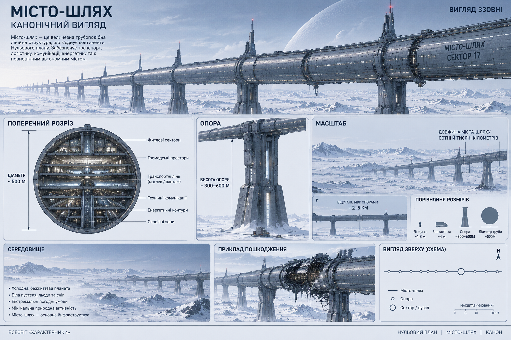

Transport
Central transport routes and monorail systems move people and cargo between distant sectors.
TECHNOLOGY · CIVIL INFRASTRUCTURE
A vast linear infrastructure connecting residential, transport, manufacturing, energy and defensive systems into a single autonomous network.

CONCEPT
The City-Path is not an ordinary city, but a huge, continuous infrastructure system. In a world shaped by global catastrophe, structures like these became one of the main ways to preserve human life and civilisation.
It can extend across vast territories, cross continents and oceans, and connect distant human settlements. The books describe City-Paths hundreds or even thousands of kilometres long.
CONSTRUCTION
The City-Path is built around a massive tubular structure raised high above the surface on large supports. In cross-section, it resembles an oval tube. Different functional levels and sectors are located inside it.
Central transport routes and monorail systems move people and cargo between distant sectors.
Residential districts inside the structure allow people to live continuously regardless of conditions on the surface.
Production facilities keep the city running and allow damaged infrastructure to be repaired.
Power stations and internal networks supply residential, technical and manufacturing systems.
INTERNAL INFRASTRUCTURE
The City-Path is designed so that many essential functions can operate inside the structure itself. In addition to housing and transport, it contains laboratories, technical rooms, power systems and other facilities required for everyday life and work.
Permanent residence in a protected environment.
Production and repair of essential equipment.
Scientific and engineering research.
Maintenance of the structure and its systems.
Generation and distribution of energy.
Technical infrastructure for operations beyond the City-Path.
PROTECTION
City-Paths were built when ordinary urban infrastructure could no longer guarantee the population's safety. Their structure and protective systems were therefore designed for exceptionally harsh conditions.
The books state that City-Paths could withstand even an indirect nuclear blast. A monitoring system watched the surrounding area from a considerable distance, while the infrastructure itself was equipped with active defensive systems.
Missile, cannon, machine-gun and other defensive systems, supported by large numbers of drones.
Continuous surveillance of the surrounding area and early threat detection.
ADVANTAGE OF A LINEAR STRUCTURE
One of the City-Path's main advantages is its length. After a global war, individual sections could be damaged or destroyed while other sections remained habitable.
This allowed people to gather in surviving parts of the infrastructure and gradually restore it. The City-Path effectively became a distributed survival system in which losing one sector did not mean losing the entire structure.
INTER-PLANAR TRANSFER
Cities of the Zero Plan can be transferred to another Plan. This does not mean that every city is moved in the same way. The method depends on the type of city, its construction and the receiving site prepared on the destination Plan.
Underground cities are a separate case. They are not transferred like a surface structure that can be moved progressively along its length. A suitable underground cavity is prepared on the other Plan, and the existing city is then physically transferred into that prepared space together with its inhabitants.
The transfer of an underground city is therefore a separate operation and must not be confused with other methods of moving infrastructure between Plans.
CANON
The City-Path is one of the key technologies of the Zero Plan civilisation. It became humanity's answer to nuclear winter, the destruction of ordinary cities and the constant threat of extinction.
It is not a single building, but a large-scale infrastructure system in which transport, housing, manufacturing, energy, science and defence operate as one integrated complex.